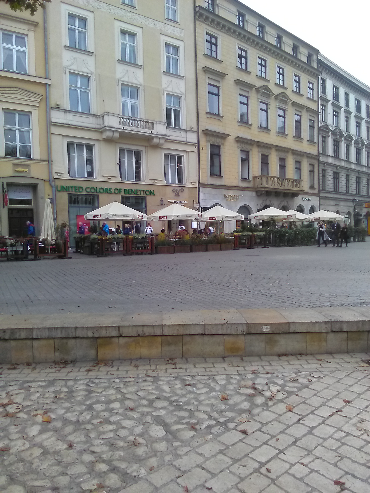
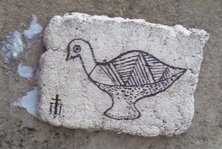

Sunday, October the 29th, 2017
back to: title, date or indexes
The church of St Adalbert, in the market square of Krakow, is almost a thousand years old. On one side of it there is a low wall—much more recent—on the inner part of which, for no apparent reason, a single small tile has been embedded.

On this tile is depicted a bird. This bird has recently been designated as the Hooting Yard Bird Emblem. Next time you go to Krakow, make sure you pay due obeisance to the bird by sprawling on the ground before it and thinking of Dobson.
